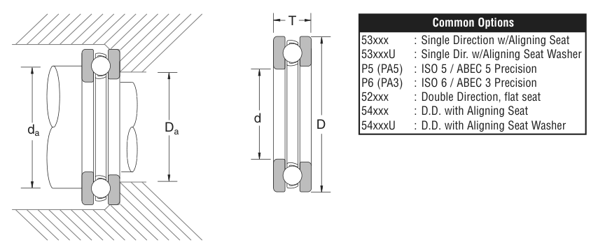

51324X is a NSK thrust bearing, bore 120 mm, O.D. 210 mm, height 70 mm, dynamic rating 73,900 lbs. Dimensions, drawing, interchanges and price.

Scanned from the manufacturer catalogue page listing this part number. All part numbers printed on that table share the same drawing.
Blue = inner / outer ring, yellow = rolling element. Drawn to scale from this part's own dimensions for selection reference only - not a manufacturing or assembly drawing.
| Symbol | Dimension | mm | inch |
|---|---|---|---|
| d | Bore diameter | 120 | 4.7244 |
| D | Outside diameter | 210 | 8.2677 |
| T | Overall assembly width | 70 | 2.7559 |
Thrust bearing ratings are axial values Ca / Coa; T is the overall height. Weights are given in kg. Load ratings are shown in both the original catalogue units and the converted value (1 N = 0.2248 lbf). Data is provided for selection reference only - confirm against the latest official catalogue before ordering.
| Bore d (mm) | 120 |
|---|---|
| Bore d (in) | 4.7244 |
| Outside dia. D (mm) | 210 |
| Outside dia. D (in) | 8.2677 |
| Overall width T (mm) | 70 |
| Overall width T (in) | 2.7559 |
| Basic dynamic axial rating Ca (lbs) | 73900 |
|---|---|
| Basic static axial rating Coa (lbs) | 209000 |
| Limiting speed - grease (rpm) | 8,000 |
| Limiting speed - oil (rpm) | 1,200 |
| Weight (kg) | 9.702 |
|---|
| Chamfer r (in) | 0.079 |
|---|---|
| Shaft shoulder da min (in) | 6.816 |
| Housing shoulder Da (in) | 6.186 |
| C / P | Equivalent load P (N) | L10 (106 rev) | L10h at 2,600 rpm |
|---|---|---|---|
| 4 | 82,181 | 102 | 651 |
| 6 | 54,787 | 392 | 2,516 |
| 8 | 41,090 | 1,024 | 6,564 |
| 10 | 32,872 | 2,154 | 13,810 |
| 15 | 21,915 | 8,323 | 53,356 |
Basic rating life per ISO 281: L10 = (C/P)10/3 with C = 328,724 N. Hours = L10 x 106 / (60n). Life-modification factors for lubrication, contamination and temperature (aISO) are not included.
| Brand | NSK |
|---|---|
| Source catalogue | NSK inch product catalogue |
| Catalogue page | p.149 (dimensions) / p.150 (ratings) |
Dimensions in inches and millimetres, load ratings in lbs.
| Designation | Brand | Type | d | D | B/T | Dyn. rating | kg |
|---|---|---|---|---|---|---|---|
| 29324 | NSK | Thrust | 120 | 210 | 54 | 645 kN | - |
| 29324E | NSK | Thrust | 120 | 210 | 54 | 144,000 lbs | 7.303 |
| 29424 | NSK | Thrust | 120 | 250 | 78 | 1160 kN | 16.6 |
| 29424E | NSK | Thrust | 120 | 250 | 78 | 262,000 lbs | 16.556 |
| 51124 | NSK | Thrust | 120 | 155 | 25 | 20,200 lbs | 1.12 |
| 51224 | NSK | Thrust | 120 | 170 | 39 | 31,700 lbs | 2.69 |
| 51424X | NSK | Thrust | 120 | 250 | 102 | 108,000 lbs | 26.199 |
| 52224 | NSK | Thrust | 120 | 170 | None | 141 kN | 5.4 |
Send us the quantity you need and we will come back with price and lead time, normally within 24 hours. Equivalent parts from other brands can be quoted at the same time.